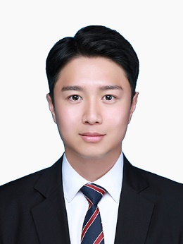

Phase 1 · Foundation 2013 – present
Experiment- and simulation-based structural integrity
실험 및 해석 기반 구조 건전성 평가
Built the material database and calibrated fracture models that everything else rests on.
Assistant Professor · Department of Artificial Intelligence & Defense Engineering, Changwon National University 국립창원대학교 인공지능디펜스공학과 조교수

Prof. Park received his B.S. (2008–2014) in naval architecture from Tongmyong University and his M.S. (2014–2016) and Ph.D. (2016–2020) in naval architecture and ocean engineering from Inha University, specializing in structural mechanics and fracture analysis. After a postdoctoral appointment at Inha University (2020) and serving on the faculty of Tongmyong University (2020–2027), he joined the Department of Artificial Intelligence & Defense Engineering at Changwon National University, where he leads the Applied Cyber-Physical Systems Laboratory.
One question has run through this work since 2013: how do marine structures behave and fail, and how early can we predict it? Each phase builds on the one before. The material database and calibrated fracture models of Phase 1 underpin the underwater acoustics and signature control simulations of Phase 2, and those validated simulations become the physics and training data for the AI surrogates and digital twins of Phase 3. Earlier phases continue alongside the new ones.
실험 및 해석 기반 구조 건전성 평가
Built the material database and calibrated fracture models that everything else rests on.
수중 음향 및 함정 신호 제어
Extended those models to underwater radiated noise (URN), acoustic target strength (TS) and naval signature control.
AI·디지털 트윈 융합 지능형 모니터링
Turns validated simulations into fast AI surrogates and live digital twins.
Faculty and student awards are listed on the News page.
Student researchers at ACPS Lab work directly on national defense, research institute and shipyard projects — combining physical testing, numerical simulation and AI surrogate modeling, with student awards at national autonomous vessel competitions (KABOAT) and academic conferences (see student awards). We are actively recruiting founding M.S., Ph.D. and undergraduate researchers in the Department of Artificial Intelligence & Defense Engineering at Changwon National University.
High-speed, cryogenic and hydrogen-charged material testing, user-defined constitutive subroutines and nonlinear finite element collapse analysis for naval and offshore structures.
GPU ray-shooting target strength (TS) prediction, vibro-acoustic underwater radiated noise (URN) modeling, air-bubble curtain masking and resilient mount characterization.
Physics-informed neural networks (PINNs) for structural design optimization and real-time 3D digital twins for autonomous surface and underwater vehicles.